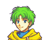

Support Rank C

あ！ チャド
ちょうどよかった さがしてたんだ

ん？
・・・なんか いい匂いだな
はい これ！
チャドの分だよ
おっ！
焼き菓子じゃねーか！！
こんないいモン
どっから手にいれたんだ？
食料支給のおじさんがね
特別にって くれたんだよ
・・・ゴクッ うまそうだな
ホントに 食っちまっていいのか？
もちろん
やったーっ！
・・・かー！ うめぇ！！
ハハッ
なんだよ
いや ごめんごめん
チャドって なんでも幸せそうに
食べるなぁって思って
そうか？
うん ぼく チャドのそういうところ
すごく いいと思うなぁ
な なにを いきなり・・・
おだてたって なんにもでねぇぞ
も もう 行くからな
菓子 ごちそーさん！！
べつに てれなくてもいいのに
素直じゃないなぁ
Support Rank B
ルゥ！ ほら やるよ
なに？ あ！ 新しいクツだ
どうしたの これ？
言っとくけど
これは盗んだんじゃないぞ
・・・この間の村で おばさんが
カギを無くして困ってたから
ちょっと 助けてやったら
くれたんだ
だったら チャドが はくべきだよ
そのおばさんは チャドに感謝して
このクツをくれたんだから
いいんだ オレのクツは
ルゥのほどボロボロじゃないし
どっちみちオレにはちょっと小さいから
ちょうどいいだろ
チャドとぼくは 背の高さ
そんなにかわらないのに？
チャドに小さいなら
ぼくにも小さいはずだよ？
う うるさいな！ それでも
オレのほうがちょっとはデカイだろ！！
それにオレの方が年上だから
ルゥより足もデカイんだよ！
えーっ おかしいよ
そんなの！
おかしいも おかしくないもないんだ！
これで 話は終わり！
クツちゃんとはいとけよ
じゃあな
あっ チャド！
・・・ありがとう
Support Rank A
チャド！ どうしたの？
ボーッとして・・・
何か考えごと？
ルゥか・・・
いや この軍に参加して
けっこーたつなぁって思ってさ
残してきたチビども
元気でやってるかなぁ・・・
そうだね
みんな どうしてるかなぁ
エリミーヌ教団の神父さまたちの
言うことを聞いて
かしこくしていたら
いいんだけど・・・
オレたちが戻ってくんの
指おり数えて待ってんのかなぁ・・・
・・・そうだろうね
だって ぼくたちみんな 家族だもん
オレさ ルゥと一緒にきて
良かったなって思ってる
へぇ・・・
それって ぼくも頼りになるって事？
うーん・・・頼りになるのは
前から分かってたんだけど・・・
じゃあ なに？
なんて言うのかなぁ・・・
おまえにはレイって双子の弟が
いるだろ？
だから いつも３人でいても やっぱり
オレだけ他人なのかなぁって
なんだよそれ！
ぼくにとっては チャドも同じくらい
ずーっと前から大事な兄弟だったのに！！
いや だから
今は悪かったって思ってる
オレが勝手にカベを作って
それに とらわれてたんだからな
でも 今は 本当の家族
いやそれ以上に 思ってるって
・・・だったら 許してやるよ
頼りないけど 大事な兄貴だしね
なんだと！ ルゥ
オレが下手に出れば・・・
あははは・・・